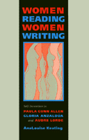

<body bgcolor="#FFFFFF" text="#000000" link="#0000FF" vlink="#CC0000" alink="#CC0000"><center><hr width="350" size="1" align="center" noshade>An examination of the work of three "out" lesbians of color and the ways they negotiate their private, public, and political worlds<hr width="350" size="1" align="center" noshade><p><a href="https://cdcshoppingcart.uchicago.edu/Cart/ChicagoBook.aspx?ISBN=9781566394192&&PRESS=temple" target="_top">Buy this book!</a> | <a href="https://cdcshoppingcart.uchicago.edu/Cart/Cart.aspx?PRESS=temple" target="_top">View Cart</a> | <a href="https://cdcshoppingcart.uchicago.edu/Cart/Cart.aspx?PRESS=temple" target="_top">Check Out</a></p><p></p></center><!--none//--><h1>Women Reading Women Writing</h1>
<H2>Self-Invention in Paula Gunn Allen, Gloria Anzaldúa, and Audre Lorde</H2>
<h3>AnaLouise Keating</h3>
<P>cloth 1-56639-419-8 $83.50, Mar 96, <FONT COLOR=#990033>Out of Stock Unavailable</FONT>
<br>paper 1-56639-420-1 $32.95, Mar 96, <FONT COLOR=#990033>Available</FONT>
<BR> 256 pp
5.2x8.25
</P><BLOCKQUOTE><I>"[A] critical work that brings to the reader insight into the literature of three radical, passionate and talented lesbian writers...Keating revels in their artistry and wants to share with the reader the beauty and power of their work, especially its potential for feminist transformation."</I>
<br>&#151<b><I>Lesbian Review of Books</I></b><I></I></BLOCKQUOTE>
<p>As self-identified lesbians of color, Paula Gunn Allen, Gloria Anzald&uacute;a, and Audre Lorde negotiate diverse, sometimes conflicting, sets of personal, political, and professional worlds. Drawing on recent developments in feminist studies and queer theory, AnaLouise Keating examines the ways in which these writers, in both their creative and critical work, engage in self-analysis, cultural critique, and the construction of alternative myths and representations of women.
<p>Allen, Anzald&uacute;a, and Lorde move within, between, and among the specialized worlds of academia and publishing; the private spaces of families and friends; the politicized communities of Native Americans, Chicanas/os, and African Americans; and the overlapping yet distinct worlds of feminist, lesbian/gay, and U.S. women of color. They translate their lives into words and enact new forms of identity that blur the boundaries between apparently distinct peoples. Keating explores how, by revising precolonial mythic and cultural traditions, they invent new ways of thinking that destabilize the networks of classification.
<BR>&nbsp;<h2>Excerpt</h2><P>Excerpt available at <a href="http://www.temple.edu/tempress">www.temple.edu/tempress</a></p>
<BR>&nbsp;<h2>Reviews</h2>
<p><I>"As feminist criticism sometimes appears to be trapped in a presumed opposition between identity politics and postmodern theories, we need new ways of thinking about gender, identity and language. AnaLouise Keating's intelligent and lucid study of Paula Gunn Allen, Gloria Anzaldúa, and Audre Lorde suggests that their transformational identity politics offers one way out of what has been shaped as a dualistic and often hostile conflict. </I>Women Reading Women Writing<I> is an important addition to the literature, one that every feminist scholar and theorist will want to read."</I>
<br>&#151<b>Bonnie Zimmerman</b>
<BR>&nbsp;<h2>Contents</h2><P>
<p>Acknowledgments
<br>1. Threshold Identities
<br>2. Mythic Ways of Knowing?
<br>3. Transformational Identity Politics: Seeing "Through the Eyes of the Other"
<br>4. Back to the Mother? Paula Gunn Allen's Origin Myths
<br>5. Writing the Body/Writing the Soul: Gloria Anzaldúa's Mestizaje Écriture
<br>6. Inscribing "Black," Become...Afrekete: Audre Lorde's Interactional Self-Naming
<br>7. Crossing Over: Toward a Womanist Genealogy
<br>Notes
<br>Works Cited
<br>Index
</P><BR>&nbsp;<H2>About the Author(s)</H2>
<table><tr><td valign="top"><img src="/tempress/authors/1226_au.gif" height="90" width="75"></td><td width="100%" valign="middle"><p><B>AnaLouise Keating </B>teaches English and Women's Studies at Eastern New Mexico University.</P></td></tr></table>
<BR><H2>Subject Categories</H2>
<p><A HREF="/tempress/sexual.html" TARGET="_top">Sexuality Studies/Sexual Identity</a>
<BR><A HREF="/tempress/philosophy.html" TARGET="_top">Philosophy and Ethics</a>
</p>
<p align="center"><a href="https://cdcshoppingcart.uchicago.edu/Cart/ChicagoBook.aspx?ISBN=9781566394192&&PRESS=temple" target="_top">Buy this book!</a> | <a href="https://cdcshoppingcart.uchicago.edu/Cart/Cart.aspx?PRESS=temple" target="_top">View Cart</a> | <a href="https://cdcshoppingcart.uchicago.edu/Cart/Cart.aspx?PRESS=temple" target="_top">Check Out</a></p><p><font face="Arial" size="1"><a href="copyright.html" onMouseOver="window.status='Web Copyright Policy';return true;" onMouseOut="window.status=''" title="Web Copyright Policy">&copy;</a> 2015 <a href="http://www.temple.edu" target="new" onMouseOver="window.status='Link to Temple University home page';return true;" onMouseOut="window.status=''" title="Link to Temple University home page">Temple University</a>. All Rights Reserved. http://www.temple.edu/tempress/titles/1226_reg.html</font></p>